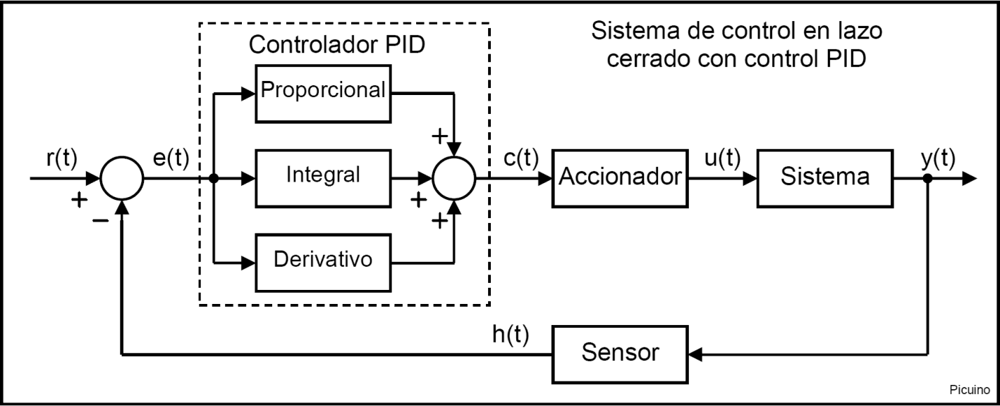
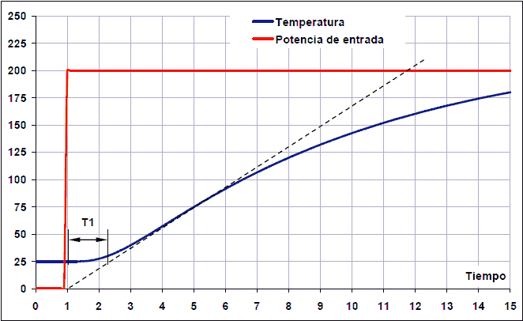
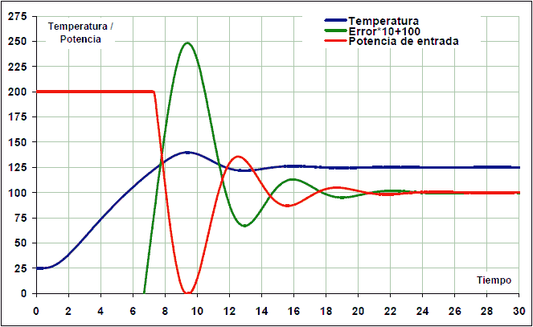
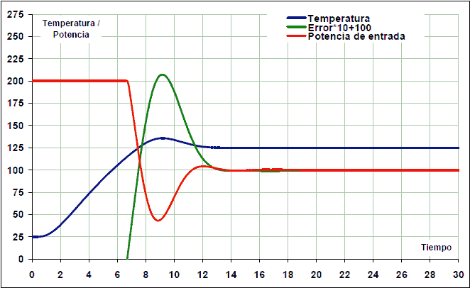
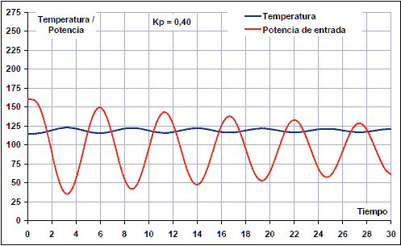
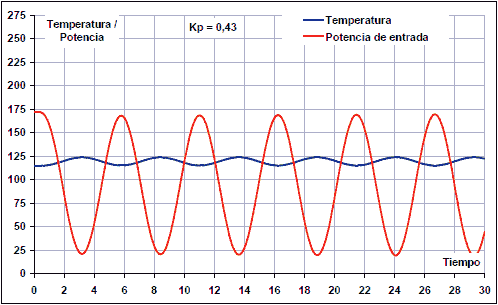

Ziegler–Nichols method¶
The Ziegler-Nichols method allows to adjust or "tune" a PID controller empirically, without needing to know the equations of the plant or the controlled system. These tuning rules proposed by Ziegler and Nichols were published in 1942 and since then they have been one of the most widely used and widely used tuning methods.
The values proposed by this method try to achieve in the feedback system a step response with a maximum overshoot of 25%, which is a value Robust with good speed and stability characteristics for most systems.
The Ziegler-Nichols PID regulator tuning method allows defining the constants or proportional, integral and derivative gains (Kp, Ki and Kd) from the response of the system in open loop or from the response of the system in closed loop. Each of the two trials best fits one type of system.
Tuning by step response¶
This tuning method is well suited to systems that are open-loop stable and have a time delay from when they receive the control signal to when they start to act.
In order to determine the step response of the controlled plant or system, the PID controller must be removed and replaced with a step signal applied to the actuator.
{kind=link}
The following figure shows the modification that must be made to the closed-loop control system to convert it into an open-loop system that responds to a step signal, removing the PID controller:

In the following image you can see the step input to the actuator or signal c(t) represented in red. In blue the output of the system measured by the sensor or signal h(t) is represented. The input step c(t) must be between 10% and 20% of the nominal input value. As can be seen, the system response presents a delay, also called dead time, represented by T1.
{kind=link}
To calculate the parameters, we begin by drawing a straight line tangent to the output signal of the system (blue curve). This tangent is drawn on the image with a dashed line.
The time T1 corresponds to the dead time. This is the time it takes for the system to start responding. This interval is measured from when the step signal rises, to the point of intersection of the tangent line with the initial value of the system, which in this case is the value 25ºC.
The T2 time is the rise time. Time 2 will start where the tangent line intersects the start output value (25º at 2 seconds) and will end where the tangent line intersects the output end value (225º at 14 seconds).
{kind=link}
Step response. Time 2 begins after T1 and ends when the tangent line reaches the maximum output value, in this case 225ºC.¶
In addition to these two characteristic times, the variation of the step signal dX and the variation of the system response dY must also be calculated.
The dX variation corresponds to the step of the control signal. In the example that appears in the images, the variation of the step signal corresponds to dX = 5 volts of control signal c(t).
The dY variation of the system due to the step signal that we have introduced corresponds in the example to dY = 200ºC measured by the sensor h(t) in a certain amount of volts.
From these values, the system constant Ko can be calculated:
Ko = (dX * T2) / (dY * T1)
And from the constant Ko it is possible to calculate the parameters of the PID controller with only proportional (P), proportional and integral (PI), proportional and derivative (PD) or proportional integral and derivative (PID) action:
Control Kp Ki Kd P Ko PI 0.9*Ko 0.27*Ko/T1 P.S. 1.6*Ko 0.60*Ko*T1 PID 1.2*Ko 0.60*Ko/T1 0.60*Ko*T1
The constant Kp corresponds to the proportional gain, Ki is the integral gain and Kd is the derivative gain.
Example of PID tuning with step response¶
In the example that appears in the previous images, the simulation of an oven made with a spreadsheet has been used. A simulator of a heating system with two boilers is also available.
Temperature control simulator:Thermal Control. Version 0.11
To calculate system parameters, a step response is forced by setting the control signal to 0 volts with a 5 volt step. The system responds by changing from 25 degrees Celsius (0.25V) to 225 degrees Celsius (2.25V). The times are those that appear in the previous graphs, with which the values of the response curve of the system are the following:
dX = 5 - 0 = 5 volts
dY = 2.25 - 0.25 = 2 volts
T1 = 2.2 - 1 = 1.2 seconds
T2 = 13.8 - 2.2 = 11.6 seconds
From these values, the parameters of the PID regulator can be calculated:
Ko = (dX * T2) / (dY * T1) = (5 * 11.6) / (2 * 1.2) = 24.2
Control Kp Ki Kd P 24.2 PI 21.8 5.44 PI 38.7 17.4 PID 29.0 12.1 17.4
After entering the values Kp, Ki and Kd in the PID, the following response is obtained:
{kind=link}
The PID parameters can now be manually adjusted to achieve a slightly more stable response. The derivative gain has been increased and the integral reduced to reduce oscillations:
Kp = 28
Ki = 10
Kd = 21
As a result, the system now stabilizes in 12 seconds:
{kind=link}
In all cases, the integral response has been limited so that it is worth zero if the error is greater than 40ºC. This mode of operation of the integral gain is called anti-windup and serves to avoid excessive overshoot in the response. This overshoot occurs because the integral control increases while the actuator is saturated, so that it accumulates a value that is too high and not adjusted to the real response of the system.
Closed-loop critical gain tuning¶
This method does not require removing the PID controller from the closed loop. In this case it is only necessary to minimize the derivative action and the integral action of the PID regulator. The closed-loop test consists of gradually increasing the proportional gain until the system oscillates in a sustained manner in the event of any disturbance. This oscillation must be linear, without saturations. At this moment it is necessary to measure the proportional gain, called critical gain or Kc, and the oscillation period Tc in seconds.

Once these two values have been measured, the parameters of the PID controller with only proportional (P), proportional and integral (PI), proportional and derivative (PD) or proportional integral and derivative (PID) action can be calculated:
Control Kp Ki Kd P 0.50*Kc PI 0.45*Kc 0.54*Kc/Tc P.S. 0.80*Kc 0.075*Kc*Tc PID 0.59*Kc 1.18*Kc/Tc 0.075*Kc*Tc
The constant Kp corresponds to the proportional gain, Ki is the integral gain and Kd is the derivative gain.
Example of PID tuning with the critical gain¶
We are going to perform a tuning of the previously simulated thermal system:
Temperature control simulator:Thermal Control. Version 0.11
The first operation will be to cancel the derivative and integral gains:
Kd = 0
Ki = 0
Next, a working temperature is set at the reference and the proportional gain is increased until a sustained oscillatory response is achieved.
With a proportional gain Kp = 0.40 the response is still damped:
{kind=link}
By increasing the proportional gain up to Kp = 0.43, a response with sustained oscillations is obtained:
{kind=link}
By increasing the gain up to Kp = 0.45, the oscillations grow in time, so the gain would be too high.

In this case, therefore, the critical gain and the period are:
Kc = 0.43
Tc = 21/4 = 5.3 s
From these values the parameters of the PID controller are calculated:
Control Kp Ki Kd P 0.215 PI 0.195 0.044 PI 0.344 0.169 PID 0.254 0.096 0.169
As can be seen, the values are similar to the values obtained previously with the step response method. The differences are due to the fact that this system is not linear and therefore has a distorted oscillatory response when seeking the critical gain.
Entering the above values in the PID controller, the following response of the thermal system with PID controller is obtained:

In this case, you can also finish tuning the PID regulator by hand to get a slightly more stable response.
References¶
[1] Ogata, Katsuhiko. Modern Control Engineering. Third edition. Prentice Hall Publisher.
[2] Ogata, Katsuhiko. Control systems in discrete time. Second edition. Prentice Hall Publisher.